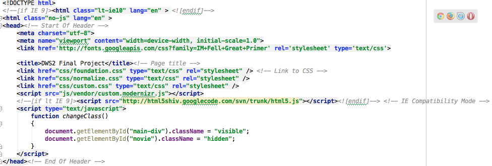
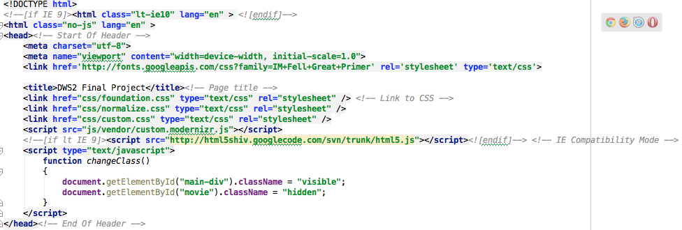

B1 Selectors
In this assignment we learned about some more advances CSS selectors. We also discussed the cascade in more detail than we had in previous courses. We also learned how to calculate specificity.
Some of the highlights from that assignment include:
- Vendor Prefixes
- Attribute
- Pseudo-class
- Pseudo-element
- Negation
- Combinators
- Grouping
- Origin
- !important
- Inheritance
- Calculating Specificity
B2 Responsive from Scratch
In this class we explored what Responsive Web Design is and why we need to learn how to implement the technique into our design process.
The bulk of the information was about converting fixed measurements of elements and fonts to variable sizes.
We also learned about the MEDIA QUERY, a very useful tool for measuring the browsers width and applying a set of CSS rules only when the parameters of that query are met.
B3- B5 Frameworks
In assignments 3 through 5 we learned about a few of the most popular frameworks.
CSS frameworks are pre-prepared libraries that are meant to allow for easier, more standards-compliant styling of web pages using the Cascading Style Sheets language.
Frameworks greatly increase the speed at which a standard website can be created and styled because they have various grid systems programmed into them. Usually, achieve a desired layout only involves the addition of specific class to various elements on your page.

{kind=link}
{kind=link}
{kind=link}
{kind=link}
 

B6 CSS Positioning
In this class we used various positioning techniques to... position elements in various locations other than where they would normally fall in the normal cascade of HTML elements.
The elements we focused on are:
| Static | This is the default setting. Elements fall as they would without you writing this code. |
|---|---|
| Relative | This property allows you to position child elements relative to their parent element. |
| Absolute | This property positions the element relative to the window without considering the parent element |
| Fixed | Elements styled in this manner are removed from the normal flow of things and are in a single location, regardless of scroll position. |
| Z-Index | This element controls how overlapping elements stack on each other. |
B7 CSS Forms
Although pre-styled in frameworks, this assignment gave a VERY in-depth review of HTML forms and their functions. Forms are the primary means of a user to communicate data to a website, therefor smart form design is pivotal to website success.
B8 Transitions, Transformations, and Animations OH MY!
This assignment unleashed a plethora of possibilities by turning our instant CSS changes to smooth and timed changes. Many of these changes you will notice on this site.
Some of the elements we learned about are:
HOVER OVER THESE!!!
- Transitions
- Transforms
- Translate
- Scale
- Rotate
- Skew